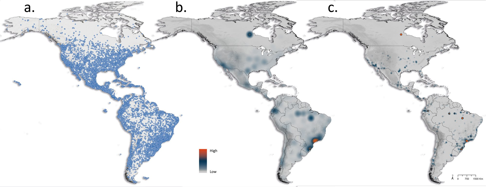
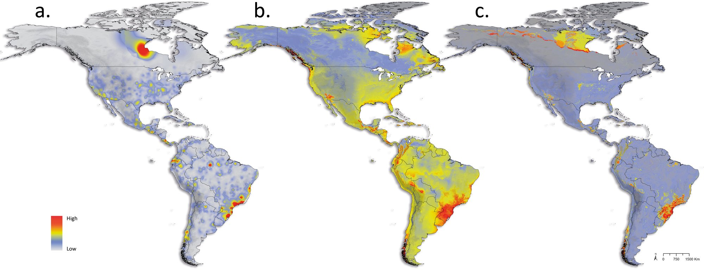
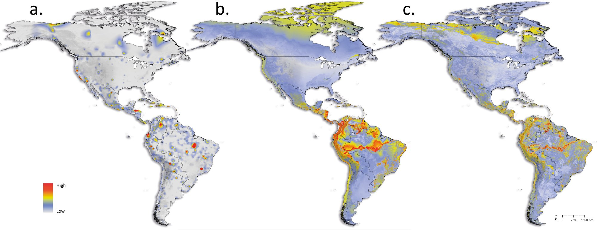
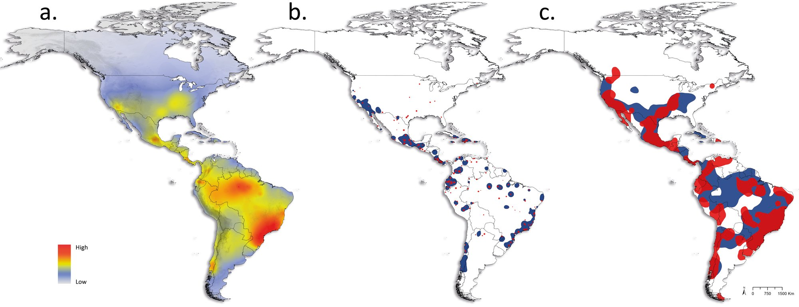
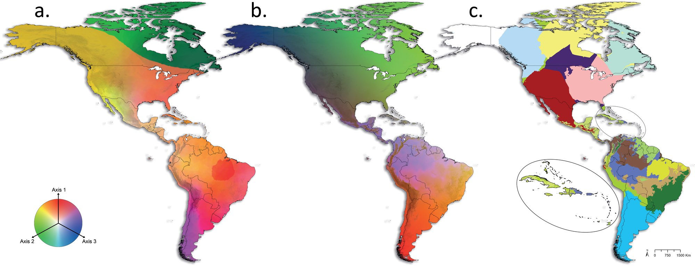
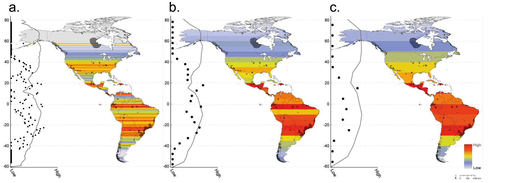

Spider biogeography of the Americas: from literature data to diversity patterns
A database of published records and maps of richness, endemism and composition for the whole continent, with the weight of sampling bias measured in each pattern.
- Deliverable
- PhD thesis, Graduate Program in Zoology, UFMG
- Advisor
- Adalberto J. dos Santos
- My role
- Author: database, analyses and maps
- Tools
- ArcGIS Pro · Dinamica EGO · R · MySQL






a. spider records; b. record density; c. sampling effort. Red marks high density or effort, grey marks low.
a. observed richness; b. richness predicted by MARS; c. richness predicted by Random Forest. Observed peaks follow the most sampled areas.
a. observed endemism index; b. predicted by MARS; c. predicted by Random Forest.
a. consensus of the areas of endemism (GIE); b. classes 1 and 2, species with ranges up to 50 km and from 51 to 200 km; c. classes 3 and 4, from 201 to 400 km and from 401 to 600 km.
a. composition from interpolated NMDS, in RGB colours; b. composition predicted by GDM along environmental gradients; c. biogeographic regionalization, with the Caribbean highlighted.
Richness in latitude bands of 1°, 5° and 10°. The charts to the left of each map show the relationship between richness and latitude.
The problem
Spider distribution data come from heterogeneous, patchy sources. Of the spider records from the Americas in GBIF, only about 26% have an identified species and collection data. Without a reliable database, you cannot tell diversity patterns apart from gaps in knowledge across a whole continent.
The data
SPIDBASE, a relational database built from the taxonomic literature of the World Spider Catalog (plate 2), with 148,000 records traceable to the original publication. For the gradients, variables of temperature, precipitation, productivity, climate stability and altitude.
The method
- Record density and sampling effort, to measure collection bias.
- Observed richness and endemicity, and predictions by MARS and Random Forest.
- Areas of endemism by geographic interpolation (GIE), in range-size classes.
- Composition by interpolated NMDS and by generalized dissimilarity modelling (GDM), and biogeographic regionalization.
- Species–area relationship and gradients of latitude, altitude and environment.
The result
Known spider diversity follows human population density: much of the map is sampling bias.
- The patterns match known high-diversity regions, but mismatches such as Manitoba, in Canada, point to regions that need more sampling.
- Richness peaks near 0°, 20°N and 20°S, at low altitudes, with warmer temperatures, low to medium precipitation and productivity, and stable climate.
- The number of species grows with area and with the scale of analysis.
Publication
- Russo P. (2024). Spider biogeography of the Americas: from literature data to diversity patterns. PhD thesis, Graduate Program in Zoology, UFMG.